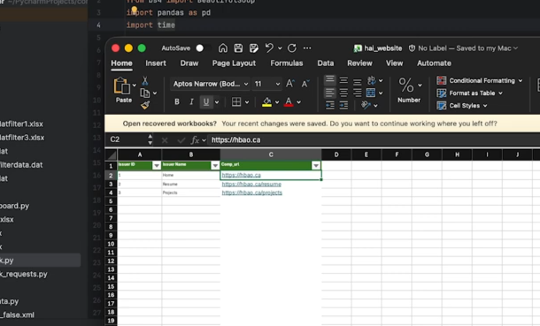

Projects
Here are some samples of my work:
Plotly Dashboard

This is an example of a dashboard I built using Plotly to help monitor the performance of the News Harvesting System while I was at Morningstar.
This helped management monitor workload as a spike in articles within a industry would result in a spike in workload for one of their team members.
Browser Automation

This is an example of how I used browser automation to check a list of corporate websites to see if they were blocked by corporate security.
This helped save my team members time by giving them the ability to send the list of blocked sites to corporate security and have them unblock it
instead of creating tickets and circling back to it after the ticket was resolved. The same idea applies to the Thematic Crawler as that system
would check corporate websites for specific ESG related content.
ChatGPT filter
This is an example of how I used ChatGPT to reduce the number of daily articles, resulting in reduced workload for
the research team.